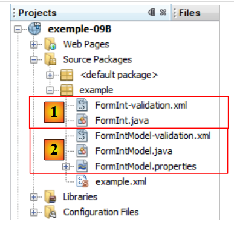

12. Exemple 09B – Validation du modèle
L'application qui suit est une variante de la précédente. Précédemment, pour l'action A :
- le fichier des règles de validation s'appelait A-validation.xml
- le fichier des messages d'erreurs de la validation s'appelait A.properties
Ici, pour l'action A de modèle M :
- le fichier des règles de validation s'appelle M-validation.xml
- le fichier des messages d'erreurs de la validation s'appelle M.properties
- le fichier A-validation.xml existe toujours mais avec un contenu qui redirige les règles de validation sur le fichier M-validation.xml.
Ce sont les seuls changements que nous apporterons à la version précédente.
Le projet Netbeans est le suivant :
 |
- en [1], l'action [FormInt] et son fichier de validation
- en [2], son modèle [FormIntModel], le fichier de validation de ce modèle et les messages associés à ce modèle.
Tout le reste est identique à la version précédente.
Le fichier [FormInt-validation.xml] est le suivant :
<!--
<!DOCTYPE validators PUBLIC "-//OpenSymphony Group//XWork Validator 1.0.2//
EN" "http://www.opensymphony.com/xwork/xwork-validator-1.0.2.dtd">
-->
<!DOCTYPE validators PUBLIC "-//OpenSymphony Group//XWork Validator 1.0.2//
EN" "http://localhost:8084/exemple-09B/example/xwork-validator-1.0.2.dtd">
<validators>
<field name="model" >
<field-validator type="visitor">
<param name="appendPrefix">false</param>
<message/>
</field-validator>
</field>
</validators>
On ne cherchera pas à expliquer le contenu de ce fichier. On le prendra tel quel en se souvenant de sa fonctionnalité : déporter les règles de validation sur le modèle. On peut se demander à quoi ça sert. En fait le modèle, ses règles de validation et ses messages peuvent pré-exister et être utilisés par différentes actions. Plutôt que de répéter les mêmes règles de validation et messages pour les différentes actions, il est préférable alors de déléguer ces fonctionnalités au modèle.
Le fichier [FormIntModel-validation.xml] est identique au fichier [FormInt-validation.xml] de la version précédente.
Le fichier [FormIntModel.properties] est identique au fichier [FormInt.properties] de la version précédente.
Le lecteur est invité à tester cette nouvelle version.